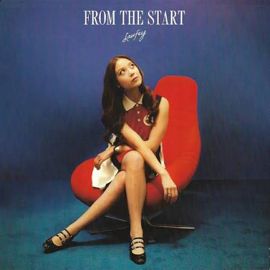
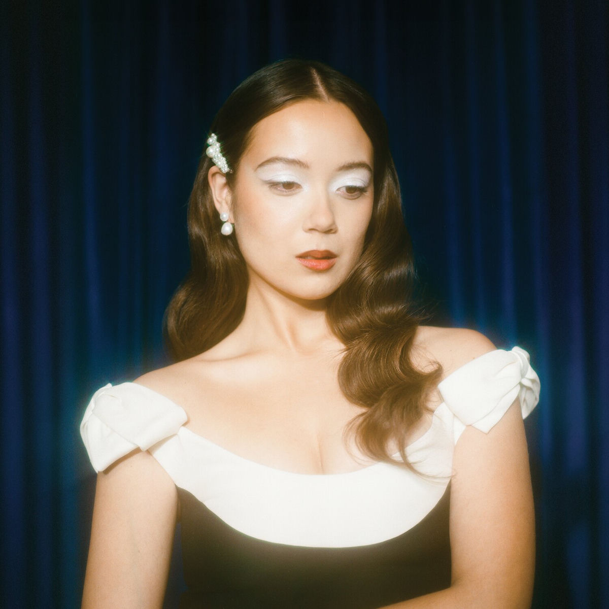
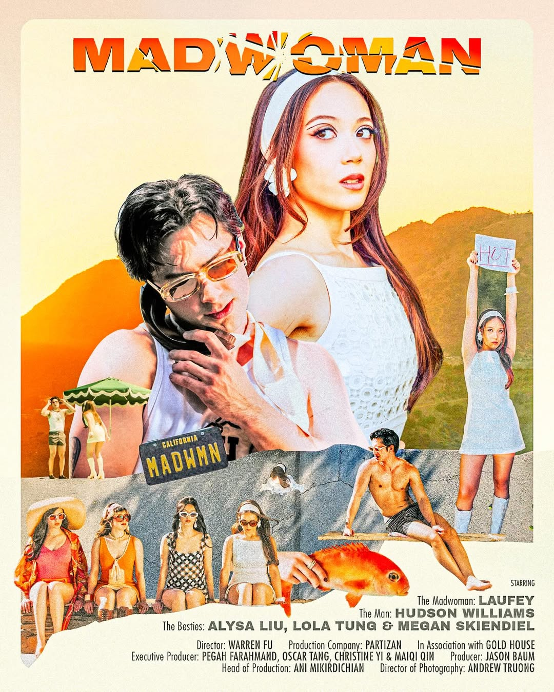
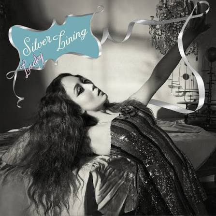
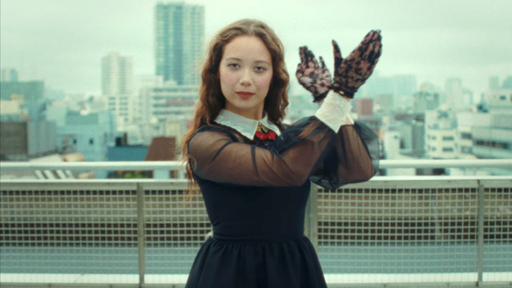

| FOTO | CANCION | LETRA | VIDEO |
|---|---|---|---|
 |
from the start |
Don't you notice how I get quiet when there's no one else around? Me and you and awkward silence Don't you dare look at me that way I don't need reminders of how you don't feel the same Oh, the burning pain Listening to you harp on 'bout some new soulmate "She's so perfect, " blah, blah, blah Oh, how I wish you'll wake up one day Run to me, confess your love, at least just let me say That when I talk to you, oh, Cupid walks right through And shoots an arrow through my heart And I sound like a loon, but don't you feel it too? Confess I loved you from the start What's a girl to do? Lying on my bed, staring into the blue Unrequited, terrifying Love is driving me a bit insane Have to get this off my chest I'm telling you today That when I talk to you, oh, Cupid walks right through And shoots an arrow through my heart And I sound like a loon, but don't you feel it too? Confess I loved you from the start Confess I loved you Just thinking of you I know I've loved you from the start |
from the start |
 |
goddess |
It always goes like this Could've predicted it I'm so naive to think you loved me for me Kissed as I ran off stage Too old to play this game Guess you're still growing up at thirty Oh Were you surprised by me When you took me home? When the glamor wore off Reduced to skin and bone I can't even tell Who you want to know I'm a goddess on stage Human when we're alone You took a star to bed Woke up with me instead You must have felt so damn deceived When you made up a version of Me that you thought you'd love But I am not your Aphrodite Oh Were you surprised by me When you took me home? When the glamor wore off Reduced to skin and bone I can't even tell Who you want to know I'm a goddess on stage Human when we're alone You took me for a fool You stole my youth You wanted this so much You watched me rise Then killed my light And now you know I'm not your fucking goddess Oh, oh I'm no goddess when I'm alone |
goddess |
 |
madwoman |
Such a terrible idea Worst one I've had all this year But I can't ignore our obvious attraction I imagine how it ends Up in flames, we'll go again Seeking chaos, can't help giving into passion But there's something so vexing 'bout you It's like the gods above us don't approve We've been through this before Fell in and out, I said, "No more" But still, I want you like a mad, mad woman I remind myself how he'd Question everything 'bout me Call me stupid as a mindless joke You hypnotized me as we spoke Purely mythological with the ugliest soul You would think that he is holding me for ransom 'Cause there's something so vexing 'bout you It's like the gods above us don't approve We've been through this before Fell in and out, I said, "No more" But still, I want you like a mad, mad woman Made it to the final hour But the wine begins to sour And I'm seeing myself in a dreadful fashion Then the fog begins to clear As I'm gasping at clean air I remember how together, we're so handsome 'Cause there's something so vexing 'bout you It's like the gods above us don't approve We've been through this before Fell in and out, I said, "No more" But still, I want you like a mad, mad woman |
madwoman |
 |
silver lining |
I've been falling in bad habits, staring into the abyss Drowning in red wine and sniffing cinnamon We've been kissing on the playground, acting like little kids Making dirty jokes and getting away with it So I propose, it's long overdue When you go to hell, I'll go there with you too And when we're punished for being so cruel The silver lining's I'll be there with you Mmm Never been calm or collected, no one ever called me sweet What a miracle, I found a darling I met you at the worst time, fell in love on a whim Now we pirouette in fields of rosy sin So I propose, it's long overdue When you go to hell, I'll go there with you too And when we're punished for being so cruel The silver lining's I'll be there with you Ooh-ooh-ooh-ooh-ooh-ooh-ooh-ooh-ooh-ooh Ooh-ooh-ooh-ooh-ooh Ooh-ooh-ooh-ooh The silver lining's I'll be there with you |
silver lining |
 |
lover girl |
This skyscraper's causing vertigo The countdown begins in Tokyo 27 days alone means 20 million ways to cope Without you I'm in a reckless fever Lovestruck girl, I'd tease her Thought I'd never be her Quite the job you've done on me, sir You've been hosting parties in my mind I'm working overtime to have you in my world Oh, what a curse it is to be a lover girl Forced to get creative, wrote my feelings down The independent lady in me is nowhere to be found I can't wait another day to see you How embarrassing to be this way I'm in a reckless fever Lovestruck girl, I'd tease her Thought I'd never be her Quite the job you've done on me, sir You've been hosting parties in my mind I'm working overtime to have you in my world Oh, what a curse it is to be in love I wait by the phone like a high school movie Dream at the shows you'll come running to me Think I see you in the wings God, I'm hallucinating What a reckless fever Lovestruck girl, I'd tease her Thought I'd never be her Quite the job you've done on me, sir You've been hosting parties in my mind I'm working overtime You've become my whole world Oh, what a curse it is to be a lover girl |
lover girl |